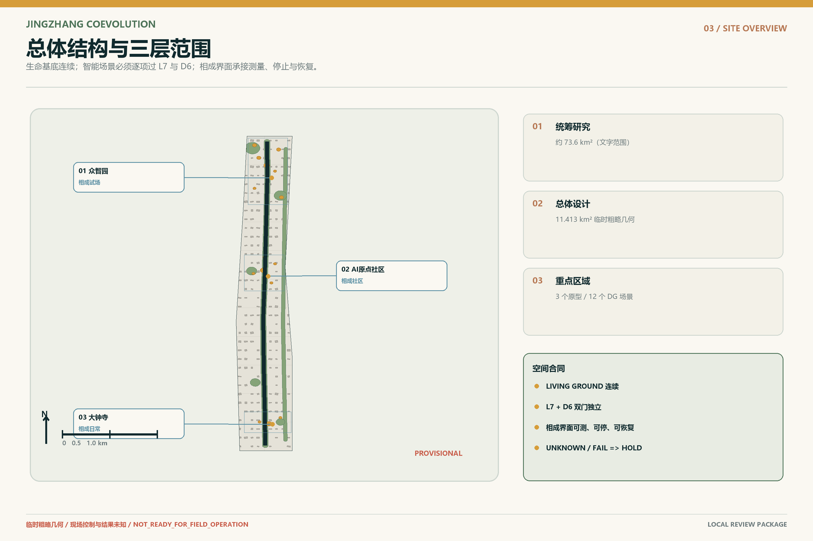
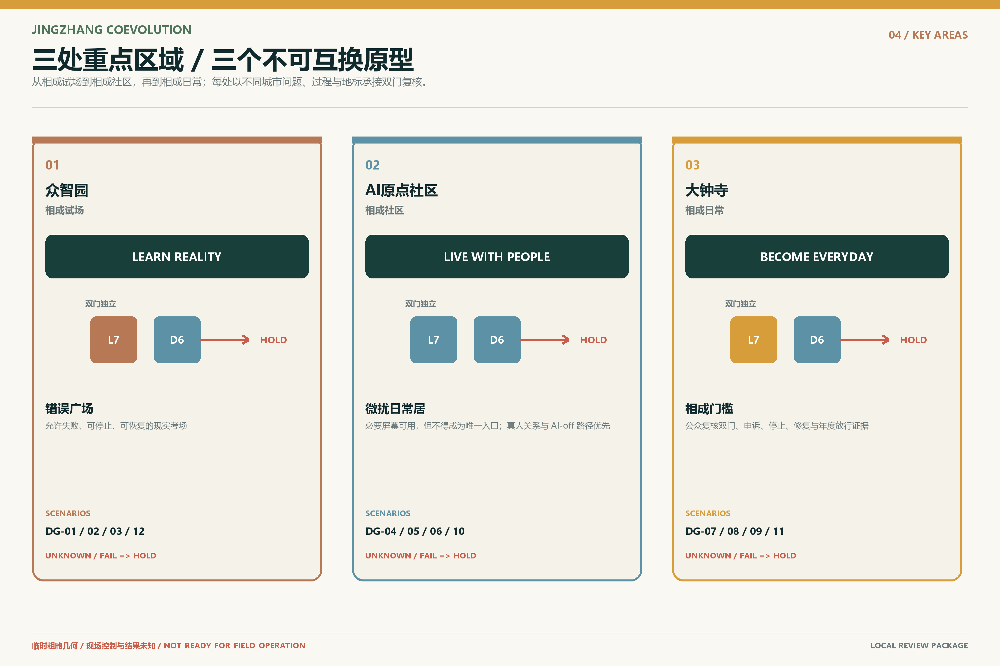
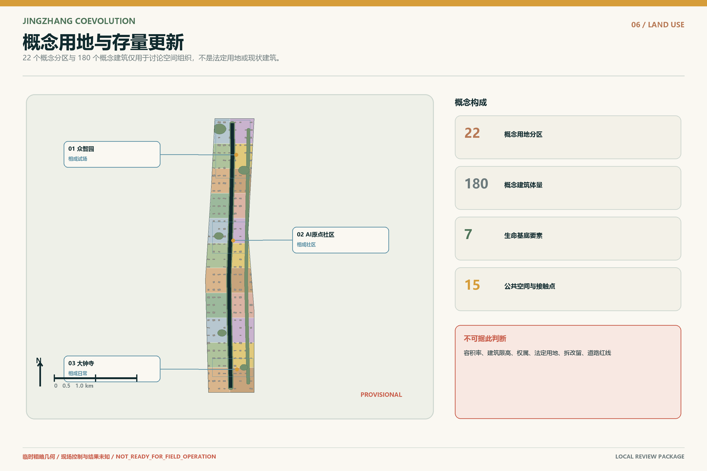
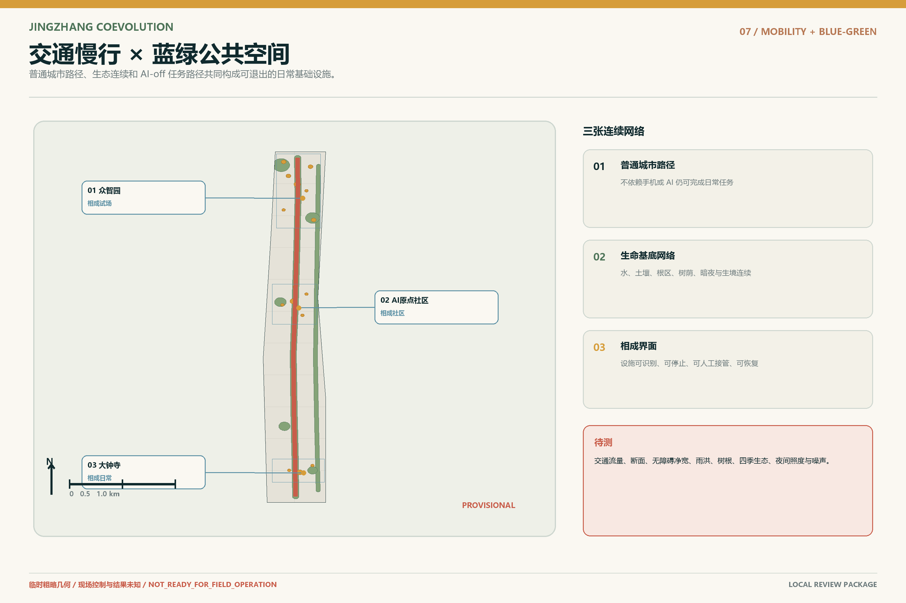
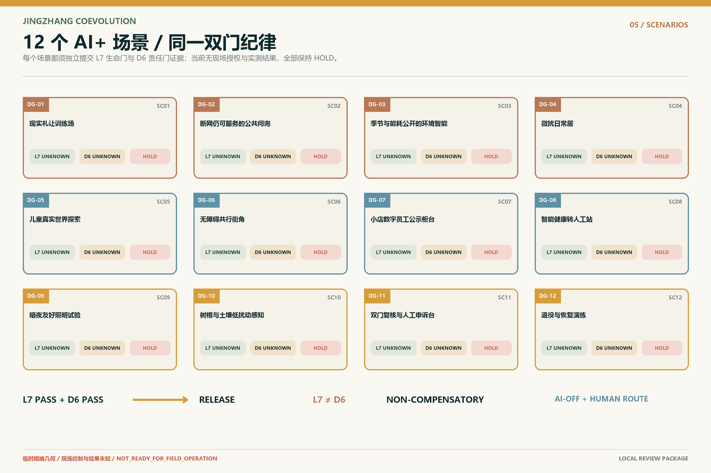
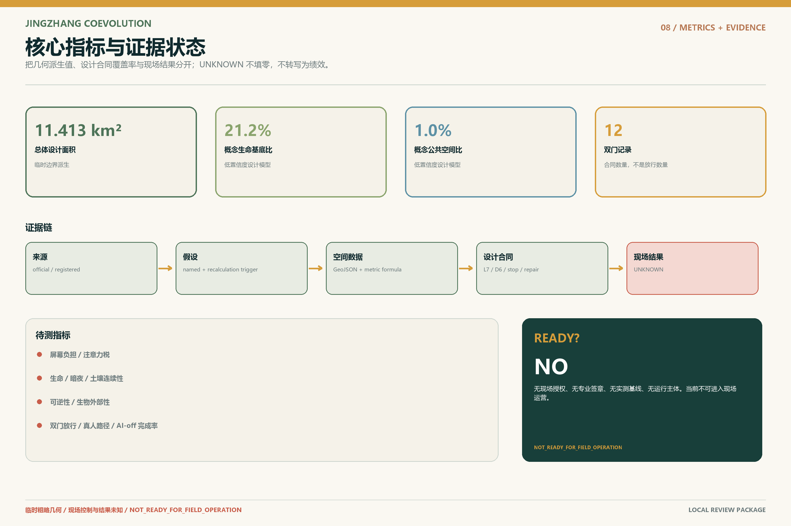

廊道与区域关系
研究京张文明轴、产业网络、生态连续性与区域创新协作；不把研究联系误写为已批准的行政或投资安排。
Centennial Jing-Zhang AI Innovation Belt · Professional Design Package
智能可以进入城市，城市不能退出生命世界。
生命有地，智能过双门，万物相成。
以京张走廊为文明时间轴，以生命连续面为首要空间结构。图面中的边界与重点区均为参赛者暂定设计几何，只服务于方案推演，待主办方正式文件到达后整体重算。

研究京张文明轴、产业网络、生态连续性与区域创新协作；不把研究联系误写为已批准的行政或投资安排。
以参赛者暂定边界组织用地、交通、蓝绿、公共空间、建筑与项目清单，并保留正式边界触发重算机制。
中关村 AI 加速区、北京 AI 原点社区、大钟寺 AI 产业聚集区均以暂定几何开展空间与场景深化。
三个区域承担不同的验证尺度：加速区测试产业协同，原点社区测试日常共居，大钟寺片区测试历史空间中的公开审查与再进入责任。

把研发、试验、审计与公众解释置于同一条可步行验证链中；先验证再扩张，失败必须可见且可退出。
将老幼、通勤者、访客、维护者与非人生命的日常条件并列，验证不依赖手机的公共服务与微扰生活。
以相成门槛 / COEVOLUTION THRESHOLD公开展示 L7、D6、HOLD、责任主体、停止和修复证据。
用地分区是设计模型而非法定规划。每个分区首先回答空气、水、土壤、根系、阴影、暗夜、安静与生物多样性如何连续，再叠加产业和公共服务。

以轨道站点、连续步行、自行车与无障碍路径连接三个重点区；将货运、维护与应急路径作为日常路权的一部分，不把效率提升转嫁给行人和生态。
LIVING GROUND 是空气、水、土壤、根系、阴影、暗夜、安静和生物多样性的物理连续，不是数字孪生或让自然“发声”的 AI 代理。

建筑策略以保留优先、修复先行、适应性再利用和可逆介入为顺序。高度、容积率、退界与拆建结论均待正式控制文件和专业团队确认。
保留可用建筑和熟悉路径，以低扰动修缮改善安全、气候适应与无障碍条件。
首层与院落为共享服务、维护、申诉和生态观察保留空间，数字服务不能成为进入门槛。
新增智能构件需可识别、可停用、可拆换；撤回后不破坏建筑基本使用和生命连续条件。
项目从基线、试验、复核走向日常运营。每一阶段均需明确参与主体、可核指标、停止条件与修复责任；未完成验证不得用后续收益补偿前置失败。
建立 L7 生命条件基线、D6 智能责任证据与公众可读的 HOLD 状态，开展小规模可撤回测试。
在相成界面公开技术、责任和生态偏差；达到停止线时停用、修复并重新进入双门审查。
只扩展已经通过双门且可被公众理解的服务，把年度审计、申诉、维护和退出纳入运营预算。
AI 不是生命物种，生命也不是 AI 的数据饲料。十二个场景均以具体公共空间、使用者、维护者、风险、停止条件和恢复路径构成可审查契约。

七项生命条件独立核验空气、水、土壤、根系、阴影、暗夜/安静与生物多样性，构成任何智能进入城市之前的第一道门。
D6 记录身份、目的、数据、责任、停止与修复义务；它不能以高分抵消任何 L7 失败，也不能让未知状态自动通过。
把人、非人生命、建筑断面和智能系统的接触关系落到可测量空间；偏差必须触发停止、修复和再进入责任。
以下三项为提交几何可重算的设计模型输出。数值与页面的机器可读属性一致，但空间依据仍属暂定约束；正式边界替换后必须整体更新。
限制：容积率、建筑高度、法定绿地率、退界和拆建控制仍为待正式文件补齐；本页不得用于报批或代替专业测绘。

提案把任务书要求分散到人可读叙事、图件、场景契约与机器审计层。这里是阅读入口，不替代结构化覆盖矩阵。
母公式、品牌语法、标识系统与双门状态表达。
以场景契约连接产业试验、公共价值和退出责任。
覆盖工作、生活、学习、照护、维护、交通与生态时刻。
老幼、通勤者、访客、维护者、行动不便者与非人生命并列。
相成门槛、误差广场及文明时间轴构成可审查地标。
年度审计、全球社群、维护、申诉、停止、修复与再进入。
页面更新不构成校验通过。只有对最终文件集完成确定性、空间、视觉与专业四门本地重放并写回自检记录后，才能形成新的本地自检结论。
本页面不独立声称通过、提交、获审或获批；也不声明任何远程 PR、合并或官方认可。
确定性与清单完整性、空间拓扑与指标重算、离线视觉包装、专业证据与设计深度。最终状态以 self_check.json 为准。
sources.json、GeoJSON、指标、合规矩阵、设计深度矩阵与场景登记表。SITE_BOUNDARY 与三个 KEY_AREA 精确多边形尚未到位，当前几何为低置信度暂定约束。